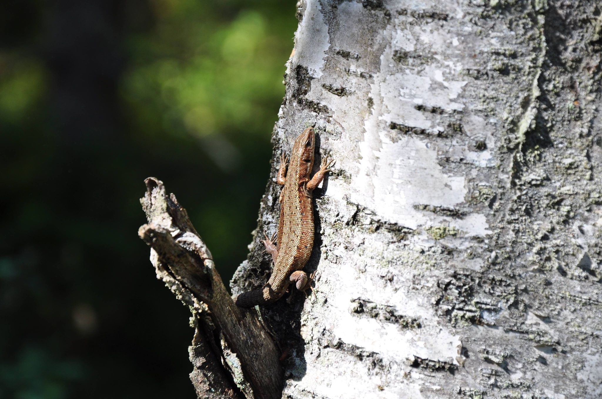
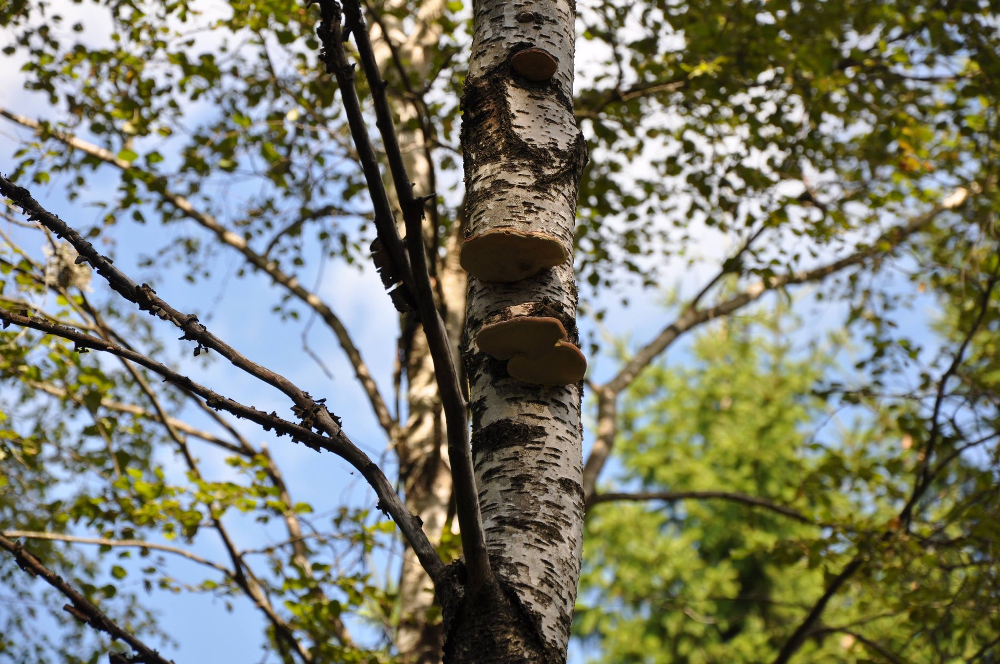
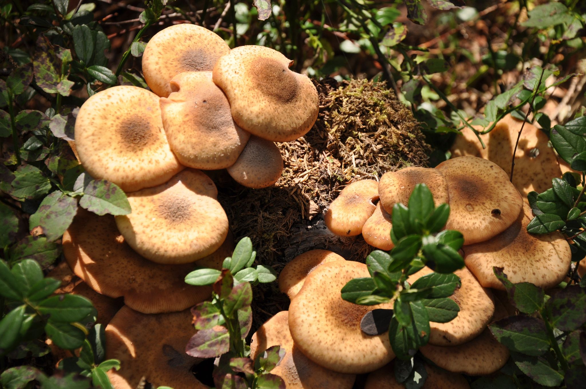
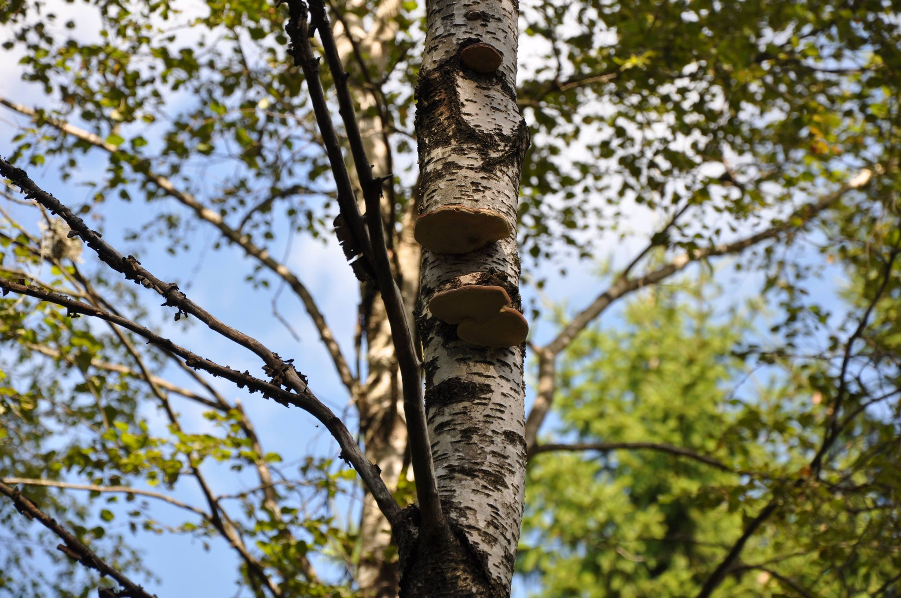
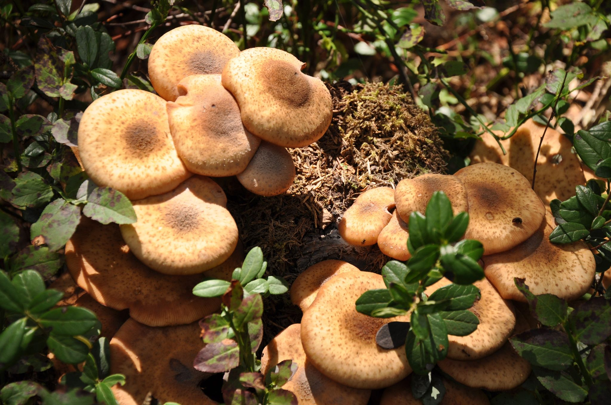

Vi har en
Vision
om att få tillbaka riktig skog på Billingen. Vi ser framför oss en skog där det ryms många olika verksamheter och aktiviteter både för oss som bor runt berget och för tillresta turister, för jägare, naturvårdare, föreningsliv och skolor. Vi hoppas att lokala föreningar, invånare och näringsidkare vill vara med och påbörja vägen till en Gemensamhetsskog på Billingen!

Partnerskap
mellan Skara stift, invånare, föreningar och näringsidkare:
- Vår förhoppning är att Skara stift vill vara delaktig med oss och bygga en ny form av gemensam förvaltning av skog och mark på norra Billingen.
- Ett långsiktigt partnerskap och åtagande i samarbete och gemensam förvaltning där vi tillsammans arbetar för en återgång till naturliga skogar genom kontinuitetsskogsbruk.
- Kunskap om hur en naturligt växande skog kan förvaltas rent praktisk som kontinuitetsskogsbruk finns och undervisning etableras i regionen (Uppsala Universitet/SNF).
- Vi hoppas att lokala föreningar, invånare och näringsidkare vill vara med och påbörja vägen till en Gemensamhetsskog på Billingen!
kontinuitetsskogsbruk av Sonia Lindblom>
Klimat och biologisk
mångfald:
- Ett skogligt ekosystem med en mångfald av arter både vad gäller trädslag och annat. Ett område där det finns träd i alla åldrar och ett rikt djurliv.
- En unik myr med ödemarkskaraktär och botanisk rikedom. Där döda träd står eller ligger kvar och utgör livsmiljö för allehanda organismer.
- En skog som får åldras och därmed kan agera kolsänka för klimatets skull.
 




Gemenskap,
kultur och ekonomi:
- Vi vill att Gemensamhetsskogen ska vara praktisk naturvård kombinerad med större möjligheter för människor och föreningsliv att få tillgång till skogen till nytta och nöje.
- Vi vill bygga gemenskap och samarbete runt berget.
- Vi vill skapa nya naturupplevelser och lärande för unga och gamla.
- Den naturligt växande skogens flora och fauna utgör en rikedom i form av timmer, örter, bär, svamp, villebråd och annat som är en resurs som vi vill vårda och bruka utan att förbruka.
- Genom kontinuitetsskogsbruk kan vi ge möjligheter för medlemmar att skapa sig en ekologisk hållbar försörjning inom träförädling, hantverk, besöksnäring, friluftsliv och idrott.